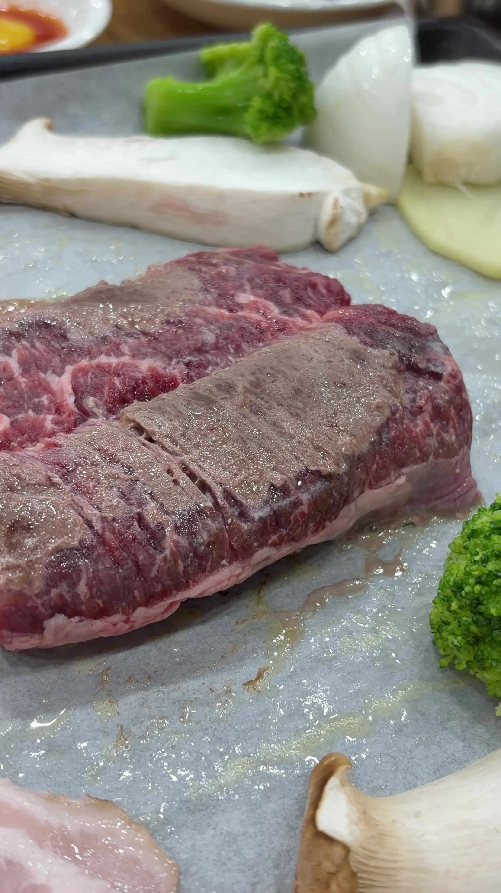
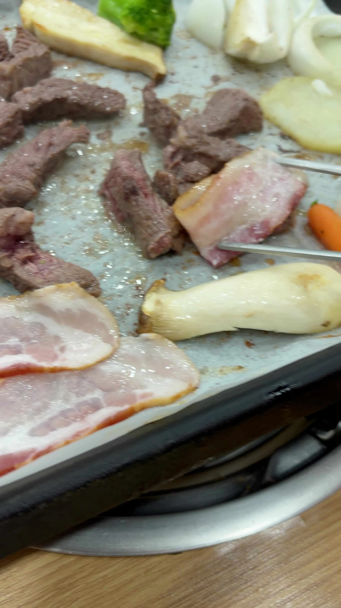
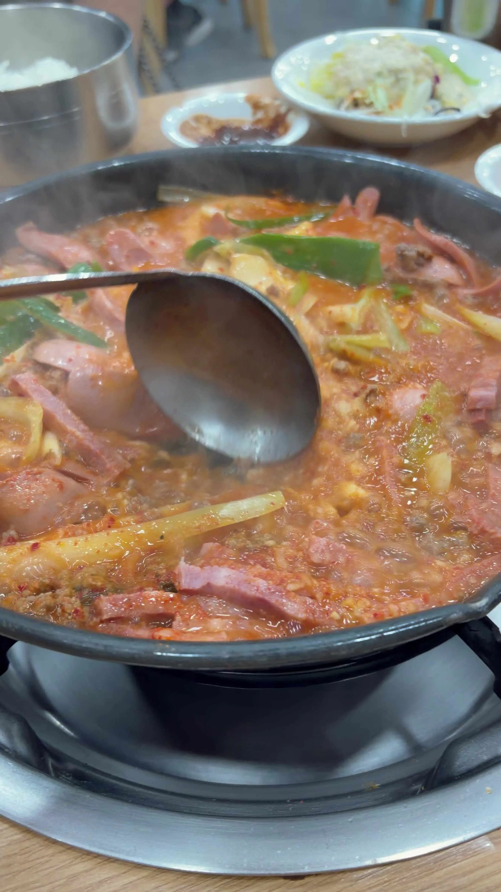

🍲 1969년생 부대찌개, 전설은 아니어도 맛은 진짜다
— 평택 최씨네부대찌개 본점 솔직 후기

📍 기본 정보


위치 경기 평택시 경기대로 1401 (서정동 779-3)
전화 031-663-8922
영업시간 매일 10:00~23:00
주차·예약 주차 가능 / 예약 가능
가격대 부대찌개 12,000원 (공기밥 포함) / 신라면 사리 2,000원
역사 Since 1969 — 송탄부대찌개 원조 표방
🎬 어쩌다 평택까지 — 이날의 루트
같이 먹을 사람이 늦는다고 했다. 그래서 모듬고기부터 시켰다. 기다리면서 먼저 먹자는 생각이었다. 부대찌개는 나중에. 그렇게 이날의 최씨네 코스가 시작됐다.
Since 1969. 입구에서부터 연식을 강하게 내세운다. "전통을 담은 정성의 맛"이라는 문구와 함께. 식당 내부는 넓고 깔끔하다. 목조 인테리어에 창가로 녹음이 보이는 구조. 점심 시간대 테이블은 가족 단위 손님들로 가득 찼다.

🥩 모듬고기 먼저 — 냉동이고 느끼하다


모듬고기 플레이터가 나왔다. 삼겹살·목살·베이컨·소고기·소시지에 양파·감자·버섯·브로콜리·당근까지. 구성 자체는 풍성하다.
확실히 냉동육이다. 신선육과의 차이가 불판 위에서 바로 보인다. 특히 소고기는 어느 부위인지 표기가 없었다. 마블링은 있는데 식감이 냉동 특유의 느낌.


베이컨을 쌈 싸 먹으라고 안내가 있다. 먹어보면 맛은 있다. 근데 느끼하다. 베이컨 자체 기름기에 쌈장 조합이 초반엔 좋은데, 여러 점 먹다 보면 누적 느끼함이 올라온다. 이게 이날 고기 파트의 결론이다.
모듬고기 ★ 3.4점 구성은 풍성하지만 냉동육, 느끼함이 단점

▶ 🍲 1969년생 부대찌개, 전설은 아니어도 맛은 진짜다— 평택 최씨네부대 (1) — 네이버 원문에서 재생
▶ 🍲 1969년생 부대찌개, 전설은 아니어도 맛은 진짜다— 평택 최씨네부대 (2) — 네이버 원문에서 재생🍲 부대찌개 본론 — 국물이 살렸다

고기를 먹고 나서 부대찌개를 시켰다. 이 순서가 결과적으로 좋은 선택이었다. 느끼해진 속에 뜨겁고 얼큰한 국물이 들어오니까 딱 맞았다.

가게 안내판에 뚜껑을 열지 말라고 적혀 있다. 국물이 진하게 우러나도록 끝까지 뚜껑을 덮고 기다리라는 것. 밥도 찌개가 다 익을 때 타이머에 맞춰 가져다준다. 앞접시가 없는 것도 의도적이다. 밥그릇에 찌개를 덜어 비벼 먹으라는 방식.
찌개 구성은 스팸 없이 소시지와 햄 위주다. 스팸을 기대하고 갔다면 아쉬울 수 있다. 국물은 얼큰하면서 진한 편. 밥에 비벼 먹으니 국물의 맛이 더 살아났다.
부대찌개 맛집으로 소문난 곳이라 기대치가 높게 들어갔는데, 전설급이냐고 하면 그건 아니다. 맛있다. 적당히 맛있다. 국물 베이스가 탄탄하고, 김치가 핵심이라는 가게 설명대로 국산 김치 맛이 확실히 느껴진다.


국물 ★ 4.2점 얼큰하고 진함, 김치 베이스 탄탄
햄·소시지 구성 ★ 3.4점 스팸 없음, 소시지·햄 위주
종합 ★ 3.8점 컨디션 영향 있을 수 있음, 맛집이긴 하되 전설급은 아님

▶ 🍲 1969년생 부대찌개, 전설은 아니어도 맛은 진짜다— 평택 최씨네부대 (3) — 네이버 원문에서 재생🧊 설빙 THE 돼지바 빙수 — 느끼함 정리
최씨네 식사를 마치고 설빙으로 이동했다. 주문한 건 'THE 돼지바' 빙수. 오레오 크럼블이 가득 깔린 위에 돼지바 아이스크림이 꽂혀 있고, 딸기와 생크림이 올라간 구성이다.
느끼함이 싹 날아갔다. 빙수 자체가 차갑고 달콤하면서 돼지바 아이스크림 특유의 초코 코팅이 포인트다. 돼지바를 좋아한다면 이 빙수는 취향 저격이다.
단점은 가격이 비싸다는 것. 설빙 빙수류 자체가 가격이 있는데, 돼지바 빙수는 그 안에서도 상위권이다. 맛은 좋지만 가성비를 따지는 타입이라면 한 번쯤 생각하게 된다.


THE 돼지바 빙수 ★ 4.0점 느끼함 정리에 최적, 가격이 아쉬움

🌶️ 총정리 — 동네 살면 자주 올 것 같은 집
타지에서 일부러 찾아올 정도냐고 하면, 솔직히 잘 모르겠다. 하지만 평택에 산다면 부대찌개 생각날 때 자연스럽게 떠오를 집이다.
모듬고기는 냉동에 느끼함이 단점이다. 부대찌개는 맛있다, 전설급은 아니지만. 국물은 확실하게 좋다. 이 두 가지를 한 번에 먹는다면 고기는 적당히, 부대찌개를 메인으로 잡는 전략이 맞다. 그리고 마무리는 설빙 돼지바 빙수로 느끼함을 정리하면 완벽한 코스가 된다.
✅ 이런 분께 추천합니다
• 평택·송탄 지역에서 부대찌개를 찾는 분
• 국물 위주로 부대찌개를 즐기는 분
• 고기+부대찌개 코스 식사를 원하는 분
❌ 이런 분께는 비추천
• 스팸 들어간 정통 부대찌개를 원하는 분
• 신선육 고기구이를 기대하는 분
• 타지에서 일부러 원정 올 정도의 맛을 기대하는 분
#최씨네부대찌개 #평택부대찌개 #송탄부대찌개 #평택맛집 #부대찌개맛집 #설빙 #돼지바빙수 #THE돼지바 #평택여행 #맛집후기